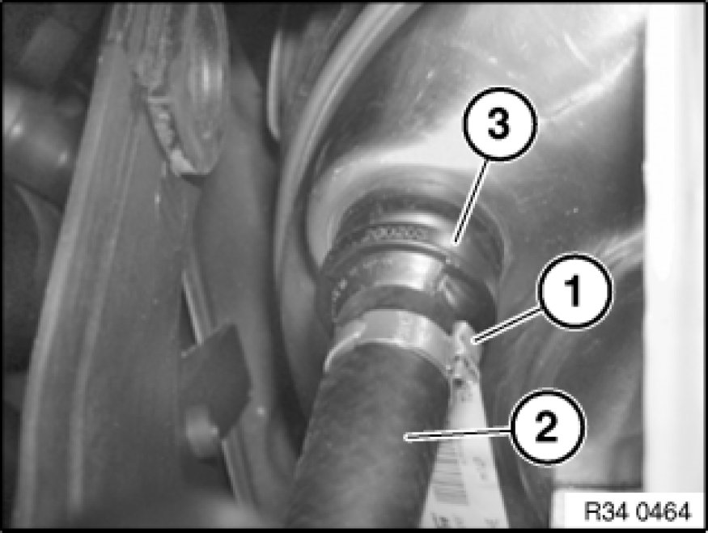

Vacuum Brake Booster Check Valve: Service and Repair
34 33 051 - Removing and installing/replacing non-return valve for brake booster

Necessary preliminary tasks:
- Read and comply with General Information Service and Repair.
- Remove heater bulkhead 51 71 080 Removing and Installing/Replacing Heater Bulkhead.
Important!
- If a rubber vacuum hose is fitted, it can be replaced individually.
- If a plastic vacuum line is fitted, it can only be replaced as a single unit together with the non-return valve.

Note:
Before beginning work, fully press the brake pedal several times to reduce the vacuum pressure in the brake booster. This makes it easier to remove the non-return valve.

Release clip (1) and detach vacuum hose (2) from non-return valve (3).
Remove non-return valve (3) from brake booster.
Installation:
Replace hose clip.
Check sealing ring in brake booster and replace if necessary.